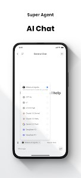
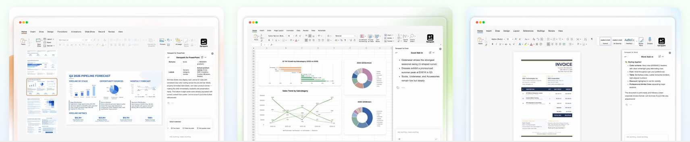

Genspark 避坑四连：从免费积分到 AI 秘书，我踩过的那些真问题
用了 Genspark 半年，从免费套餐切到 Plus，Office 插件和 AI 秘书都跑过一遍。这里整理了四个真实遇到的坑，附症状、原因和解法，帮你少走弯路。
Genspark 看着就是个"喊一声就能帮你干活"的智能体工具——它的官网上直接注册就能用。但我实际用下来发现，几个环节的设计和官方没说清的地方，很容易让人踩坑。这些坑不是什么高深的技术 bug，就是日常使用中一步没注意就卡住的那种。
坑一：免费积分突然不进账了——原来有终身额度上限
症状：某天打开 Genspark，发现昨天剩下的 23 积分还在，但今天应该补充的 100 积分没到账。等了一整天还是没有，跑去设置页一看，提示"已达到每日免费积分的终身上限"。
我当时第一反应是账号出问题了——卸载重装、换浏览器清缓存，甚至重新注册了一个小号，小号正常但老号就是不进账。浪费了快半小时才反应过来，这不是 bug，是官方规则。
原因：免费套餐的每日 100 积分不是无限循环发的。后来去Genspark文档翻了一下才发现，官方规则写得很隐晦——"每日补充持续到免费积分的终身额度上限为止"，说白了就是这个账号一辈子能白嫖的总积分有个天花板，到了之后每天不再自动补充，剩余余额用完就真没了。
我后来帮朋友算过，按照正常轻度使用，大概两三个月就能摸到这个上限。官方把这个上限数值藏得很深，估计是不想让免费用户看到数字就直接走了。
解法：
- 用免费套餐的人，自己在心里算个账——如果每天消耗稳定在 30~40 积分，那剩余积分大概还能撑多久要有个数。别突然有一天没积分了正好赶着出活；
- 触顶后两个选项：要么升级付费套餐（月度配额取代每日补充，彻底摆脱终身上限），要么精打细算把余额用完；
- 如果你还在免费期但已经常用了，不如早点看看付费套餐的性价比——Plus 档起步 10,000 积分/月，对于每周要出 1~2 份调研的人来说其实不算贵。

坑二：年付套餐付了 240 刀，积分却按月慢慢发
症状：我贪"年付约省两成"的优惠，一次性付了 239.99 美元升级 Plus。想着应该一次性到账全年 120,000 积分，结果账户里只多了 10,000——起步的月度积分，剩下 11 个月的要每个月到点自动给。
我当时差点提交退款申请，以为系统少发了。后来翻到官方那行小字"积分按月发放、不提前给全年"，才知道这是设计如此，不是 bug。
原因：年付是一次性收全年费用，但积分配额还是按月释放。官方没在显眼位置说清楚这点，页面上只标了"年付约省两成"，让人自然而然以为积分跟着一起到账。
解法：
- 别急着冲年付。如果你当前月份正好需要大量积分（比如要跑视频生成这种重任务），月付反而更灵活——下个月按需再决定续不续；
- 已经付了年付也没关系，积分虽然按月给，但每月 10,000 起步再加每周免费额度，日常使用完全够。只是别指望一次性拿到全部；
- 如果你是重度用户，可以看看更高积分档位，Plus 支持随时切换档位。
坑三：Office 插件找不到加载项入口——不同版本差很多
症状：照着文档的步骤"文件 → 获取加载项"去找 Office 插件，结果 Word 和 Excel 里根本找不到这个入口。翻了半小时设置，最后是在"选项 → 自定义功能区"里才勾出来的。
更糟的是，我用的是 Office 2019 家庭版，加载项入口藏得比订阅版深得多。还有一次在公司电脑上，IT 策略直接禁用了加载项商店，根本装不上。
原因：不同 Office 版本（订阅版 / 永久授权版 / 教育版）的加载项入口位置不同，有些甚至不支持第三方加载项直接安装。官方文档写的是最理想情况，没给版本差异说明。
解法：
- 插件安装包从官方下载拿，装之前先确认你的 Office 版本——订阅版（Microsoft 365）入口最直接，永久版需要手动开启；
- 如果企业电脑被 IT 锁了加载项，别硬装——先用网页版三件套生成草稿，再导出到本地 Office 里精修，这是官方推荐的替代路径；
- 插件面板在 Office 右侧，安装好之后以侧栏形式工作，和网页版界面风格一致。

坑四：AI 秘书授权了 Gmail 之后想撤回——入口藏很深
症状：授权 AI 秘书接管 Gmail 后，发现它的委托能力比想象中激进——"按你的口吻回复邮件"这句话，有时候理解得不太对，回复的内容让人看了想删。我想撤回授权，结果找了五分钟才找到入口。
更微妙的是，AI 秘书的授权是 OAuth 一次性授权，但授权范围默认给得很宽——读取、发送、整理邮件，全都勾上了。你授权的时候没细看，之后它就真的能操作你的真实邮箱。
原因：授权流程里权限选项挤在一起，默认勾选了全部，用户很容易一路点"允许"就过去。撤回入口在账号设置的深层路径里，官方没在 AI 秘书界面放直接链接。
解法：
- 第一次授权时慢下来——只给必要的最小权限，比如先只允许读取邮件，确认没问题再逐步开放发送和整理；
- 定期去账号设置里检查授权范围，不常用的连接器及时撤回；
- 如果担心安全，让 AI 秘书发邮件前先给你过目草稿——"审批点留给关键动作"是官方文档里明确建议的，别省去这一步；
- 企业版用户有管理员统一管控连接器的功能，团队用的话记得让管理员集中治理。
防坑清单（3 秒速查）
- 免费套餐：关注你的免费积分余额，触顶后不会自动补充，提前规划升级或精打细算；
- 年付陷阱：积分按月发，不是一次性到账，重度用用户月付反而灵活；
- Office 插件：先确认 Office 版本，企业电脑被锁加载项就先用网页版；
- AI 秘书：授权只给最小权限，发邮件前要求过目草稿，定期检查授权范围。
这些坑说穿了都不是什么大问题，但就是那种"差一点踩中就卡壳半小时"的烦人细节。知道这些之后，Genspark 其实相当省心——把坑绕过去，该干活干活。怕你哪天又踩回这些老坑，对应的规则细节和归档资料我分别整理在了GitHub、Gitee和GitCode上，随时能翻。